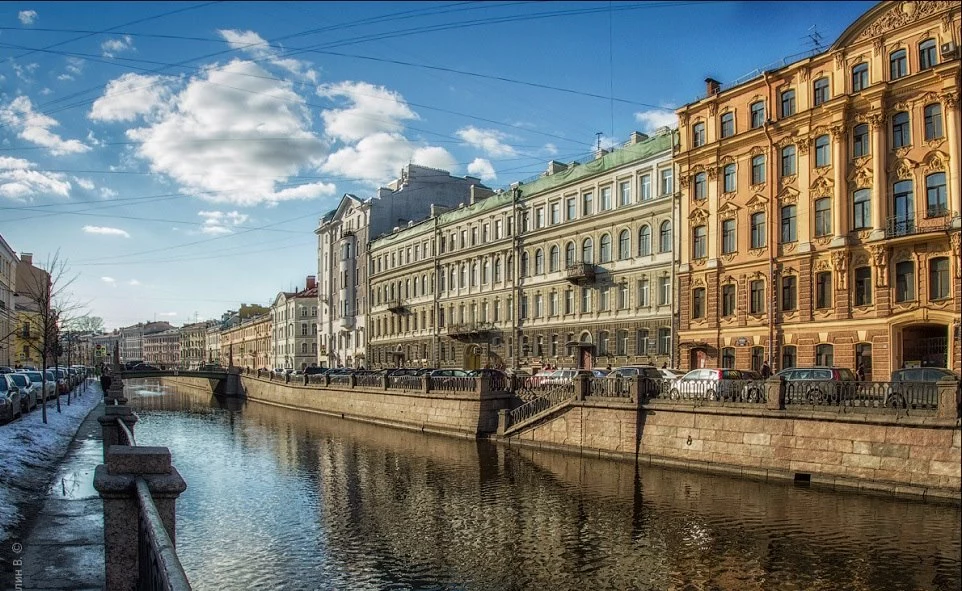
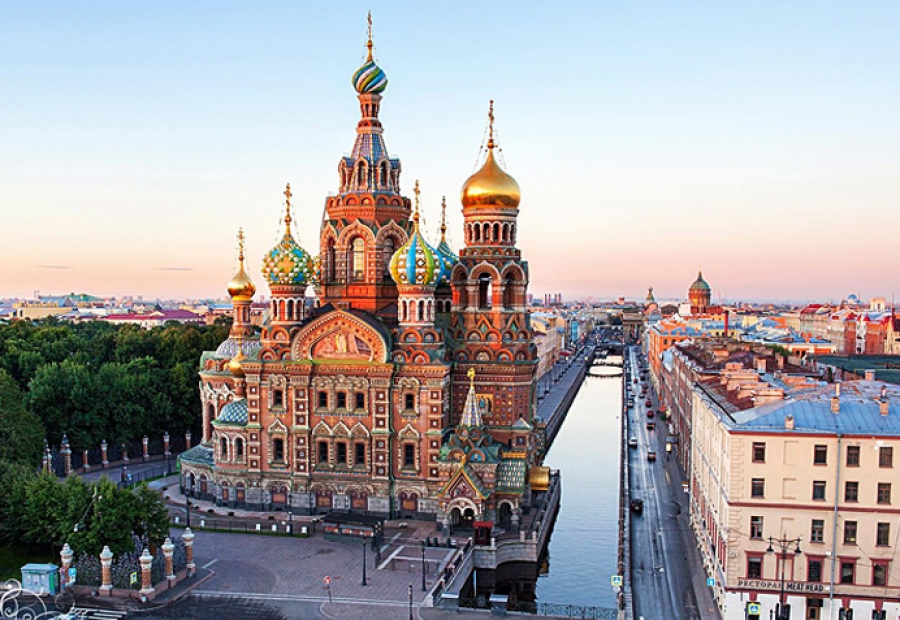
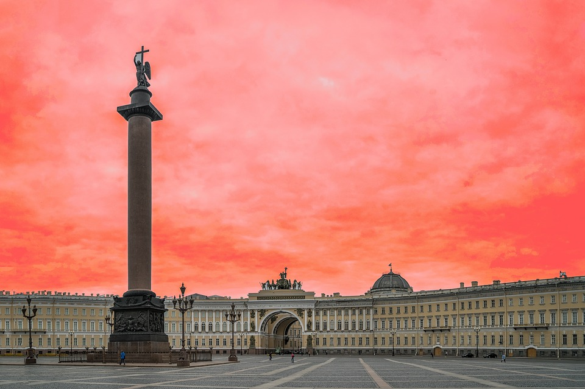

Набережная канала Грибоедова

Спас на Крови

Дом Зингера
.jpg)
Дворцовая площадь

История
Санкт-Петербург был основан в 1703 году по инициативе императора Петра I. На Заячьем острове
был заложен первый камень, именно отсюда стал расти новый город. Своё название Санкт-Петербург
получил от Петропавловской крепости, первого сооружения города, которое появилось на реке Неве в ходе Северной войны.
Климат Санкт-Петербурга умеренный, переходный от континентального к морскому.
Для данного региона характерна частая смена воздушных масс, обусловленная в значительной степени циклонической
деятельностью. Летом преобладают западные и северо-западные ветры, зимой — западные и юго-западные.
Петербургские метеостанции располагают данными с 1722 года. Самая высокая температура,
отмеченная в Санкт-Петербурге — +37,1 °C[2], а самая низкая — −41 °C[3].
Архитектура Санкт-Петербурга, в особенности его исторического центра, представляет собой созданный в
XVIII—XX веках один из самых выдающихся по выразительности архитектурных столичных комплексов. На территории
России Санкт-Петербург стал первым крупным современным городом, на территории Европы — самой молодой столицей.
Карта центра Санкт-Петербурга с обозначением основных архитектурных памятников
Особенностями архитектуры Санкт-Петербурга являются продуманная регулярность застройки,
соразмерность городских ансамблей, неброской природной среды, гармоничная полифония различных архитектурных стилей,
сочетание регионального и столичного, вовлечение пригородов в единую агломерацию.